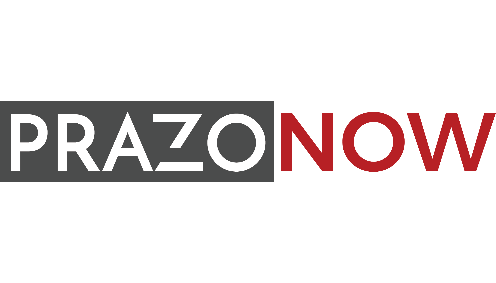
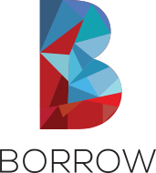

PrazoNow Rebrand
PrazoNow is an automotive startup that I worked with. I came on as the Marketing intern but since it was a small startup, I was able to climb quickly to become the main UX/UI designer and Front End Developer for the company.
The fun part about my time with PrazoNow was that I was involved in two large-scale redesign projects: the first was a simple logo update; and then the next was a complete company name change.
Logo Redesign
The previous PrazoNow logo was very generic since it was made with a logo generator, it also had the unfortunate coincidence of looking like a car being broken in half. This was the exact opposite of ideal since the company focused on redefining mobility and making it easier.
Old Logo

My Logo Redesign
My approach to the new logo was simple; the company needed something unique and scalable. I wanted to create something that had more personality so I added in colour. The company also had plans to become more than just about cars so I wanted to lean away from something too focused on that.
Name Change/Pivot
Shortly after the logo change, the company wanted to change its name. This project took more time but was definitely more rewarding. I took this as an opportunity to establish specific design conventions for the brand as a whole moving forward.
The new name the company was evolving to was "BORROW", once again I wanted to lean away from something too clever or literal and create a logo that was simple to look at and digest. It was a chance to create something that was both fun to look at and eye-catching, I think the final product really achieved that.

The next step was a style guide
Style Guide
Style guides allow brand cohesiveness across multiple platforms and are a great tool to aid in scalability. As more designers or Front End developers come onto the team, they should all ideally have a reference sheet to make sure their work aligns with the companies aesthetic vision. This was the sheet I made.
Website Redesign
The website redesign also gave me an opportunity to add a more consistent colour scheme and design language to their online image. There were also a few general UX issues with the site such as users not understanding what the product actually was or how many cars were available through it.
Old Site Preview